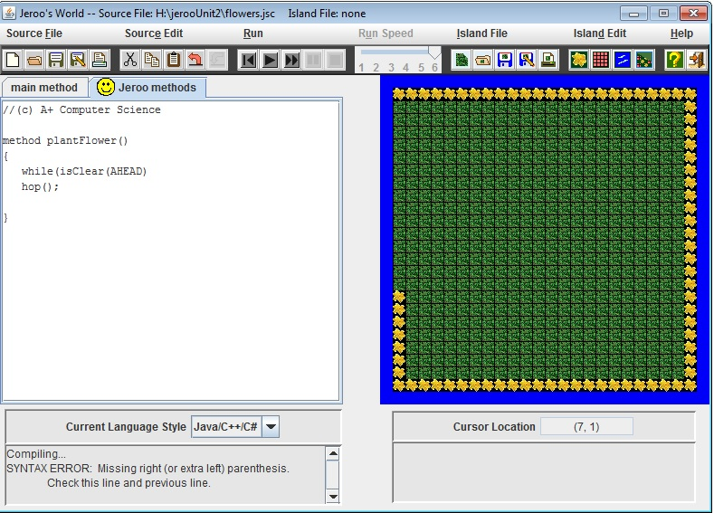

Jeroo Page
Unit 1

Description
In Jeroo Unit 1 we learned how to use Jeroo commands to solve basic problems. It was our introduction to Jeroo.
Concepts Learned
- Basic Jeroo code
- How to analyze a problem
- Learn about Jeroo objects and environment
- Problem solving
Unit 2

Description
In Jeroo Unit 2 I learned how to use methods to solve problems. We used methods in all the labs to simplify the copy and pasting. We also worked more withe pre/post conditions.
Concepts Learned
- How to use methods
- How to test a method
- How to determine pre/post conditions
Unit 3
Description
In Unit 3 I used more methods. The labs got more complex which caused me to use more methods. We had to analyze the problem and break it into smaller tasks.
Concepts Learned
- How to use more complex methods
- How to use more than one method
- How to determine pre/post conditions
- How to break a problem into smaller tasks
Unit 4
Description
We analyzed a problem, that involoved extensive descision making. We also used many new commands.
Concepts Learned
- How to use very complex methods
- Learned how to use more commands
- How to determine pre/post conditions
- How to solve complex problems